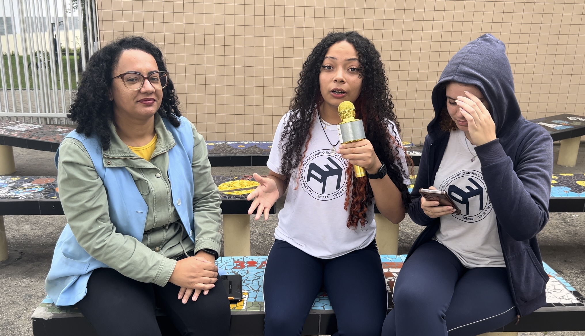

Setor Professor
Os professores são a espinha dorsal de nossa escola. Além de ensinar, eles inspiram, motivam e orientam os alunos em suas jornadas acadêmicas e pessoais.
Relato de um Professor
"Por que o senhor escolheu ser professor? • na verdade não foi exatamente uma escolha de carreira, não é algo que eu imaginava. Aconteceu porque no meu último ano de graduação, eu estava fazendo licenciatura e abriu o concurso do estado, e aí eu fiz porque já estava lá mesmo, acabei passando, fui convocado e resolvi mudar de área , tentar ver o que dava e estou trabalhando com isso desde 2015"
- Prof.João Victor
.PNG)
RESUMO DO RELATO
"O professor conta que não planejava ser docente, mas ingressou na carreira após passar em um concurso durante o último ano de sua licenciatura. Desde 2015, atua na área. Sobre alunos desmotivados, ele reconhece a dificuldade em motivá-los, já que muitos fatores externos influenciam. Por isso, foca em aulas dinâmicas e conversas quando acredita que pode ajudar. Na disciplina, ele admite ser rígido, pois entende que a indisciplina atrapalha os colegas interessados, buscando manter a ordem de forma eficiente."
- Prof. Rafael Biano
Outros Setores
Além do setor de professores, nossa escola conta com diversos setores que contribuem para o desenvolvimento dos alunos, como a biblioteca, o laboratório de ciências e as áreas de convivência.